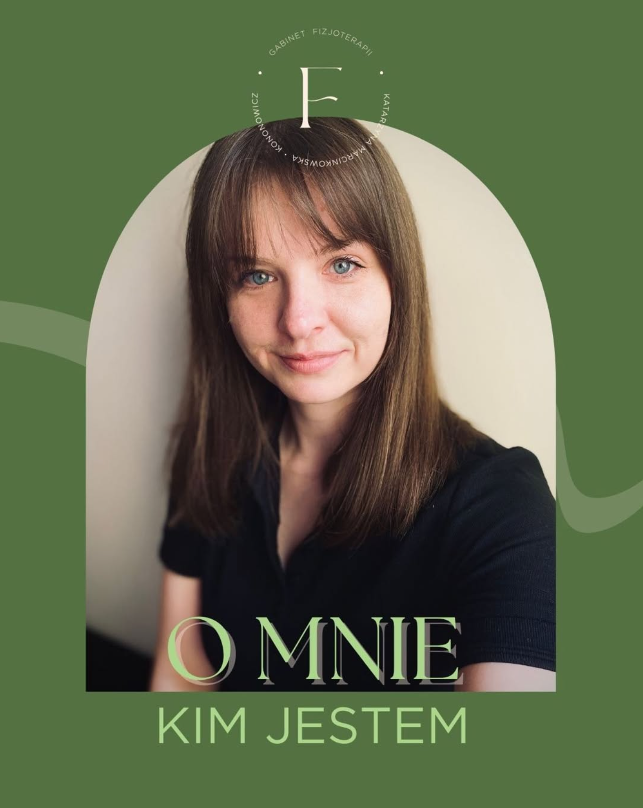

Specjalistyczna fizjoterapia uroginekologiczna, terapia blizn i opieka okołoporodowa w Ełku. Przestrzeń stworzona z myślą o kobietach — ich zdrowiu, komforcie i poczuciu bezpieczeństwa.
★★★★★ 5,0 · 29 opinii na Booksy
Z wykształcenia jestem magistrem fizjoterapii, a moją zawodową pasją jest praca z kobietami — dlatego specjalizuję się w terapii uroginekologicznej oraz terapii blizn. Każda z moich pacjentek to dla mnie indywidualna historia, którą staram się wspierać z empatią i pełnym zaangażowaniem.
Fizjosfera to miejsce, które stworzyłam z myślą o kobietach — ich zdrowiu, komforcie i poczuciu bezpieczeństwa. To przestrzeń, w której łączę wiedzę medyczną z kompleksowym podejściem do ciała i emocji.
Prywatnie jestem żoną i mamą rocznej dziewczynki, której narodziny uświadomiły mi, jak ważna jest troska o siebie — szczególnie w okresie okołoporodowym. W wolnych chwilach z przyjemnością sięgam po książki, a jeszcze niedawno można było spotkać mnie na ściance wspinaczkowej lub sali do pole dance.
Dziękuję, że tu jesteś. Jeśli czujesz, że mogę Ci pomóc — zapraszam do Fizjosfery.
Kompleksowa diagnostyka i terapia dna miednicy — nietrzymanie moczu, obniżenia, ból, przygotowanie i powrót do formy.
Fizjoterapia kobiet w ciąży i po porodzie — bezpieczne wsparcie ciała na każdym etapie macierzyństwa.
Praca z blizną po cięciu cesarskim i zabiegach — przywrócenie ruchomości, redukcja napięć i dyskomfortu.
Bezpieczny, indywidualnie dobrany ruch w ciąży i po porodzie — siła, stabilizacja i dobre samopoczucie.
Rozluźnienie tkanek, redukcja napięć i bólu — regeneracja dla przeciążonego, zmęczonego ciała.
Wsparcie mięśni i stawów plastrami — także dla kobiet w ciąży (brzuch i plecy).
Jasne, przytulne wnętrze w centrum Ełku, w pełni wyposażone do pracy z ciałem — z zachowaniem intymności i komfortu.
Polecam z całego serca. Trafiłam do Pani zarówno w okresie przygotowania do porodu, jak i później po cięciu cesarskim — w obu etapach otrzymałam ogromne wsparcie oraz bardzo profesjonalną opiekę. Czułam się swobodnie i zaopiekowana.
Serdecznie polecam! Miłe podejście, ćwiczenia dobrane pod możliwości pacjenta. Czułam, że jestem w dobrych rękach.
Polecam! Dobra robota, cenne wskazówki i normalne, ludzkie podejście. Pani Katarzyna ma ogromną wiedzę w swojej dziedzinie.
Zabierz dokumentację medyczną, jeśli ją posiadasz, oraz wygodny strój. Pierwsza wizyta to przede wszystkim rozmowa, wywiad i badanie — spokojnie omawiamy Twoje potrzeby i cele terapii.
Terapia prowadzona jest z pełnym poszanowaniem Twojego komfortu i granic. Każdy etap wykonywany jest za Twoją zgodą, w tempie dopasowanym do Ciebie.
Delikatną pracę można rozpocząć już w połogu, a pełniejszą terapię zwykle po kontroli u ginekologa. Plan zawsze dobieramy indywidualnie do Twojego stanu.
Nie — do wizyty prywatnej skierowanie nie jest wymagane. Wystarczy rezerwacja terminu online przez Booksy lub telefonicznie.
Najwygodniej online przez Booksy (rezerwacja 24/7), telefonicznie pod numerem 570 033 530 lub przez wiadomość na Instagramie @fizjosfera.elk.
ul. Adama Mickiewicza 9B lok. 10
19-300 Ełk
Gabinet mieści się w dogodnej lokalizacji w centrum miasta. Wizyty odbywają się po wcześniejszej rezerwacji.
Otwórz w Mapach Google